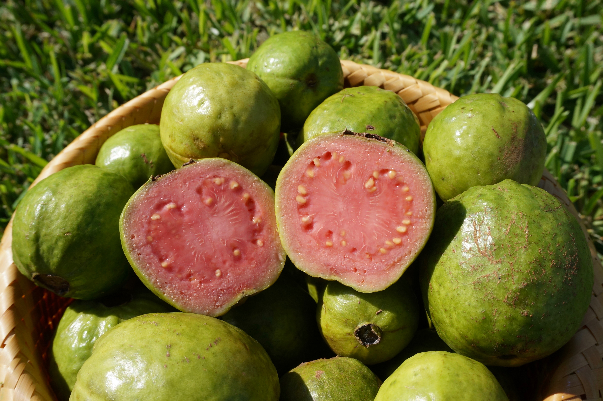
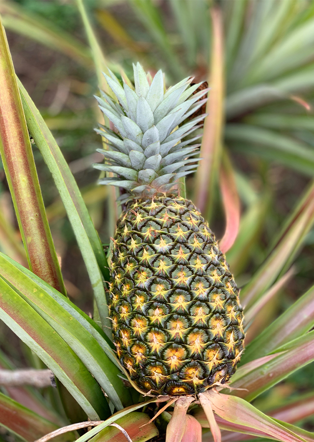
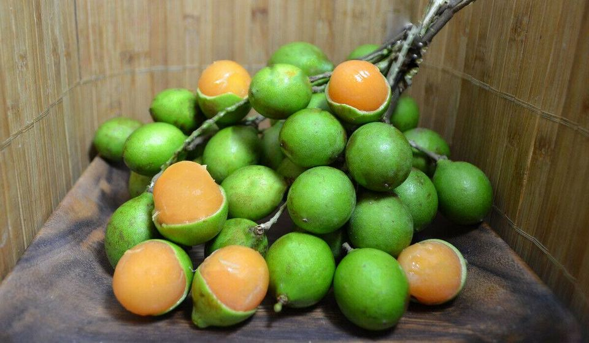
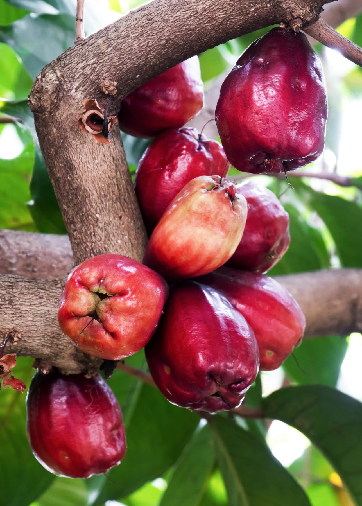
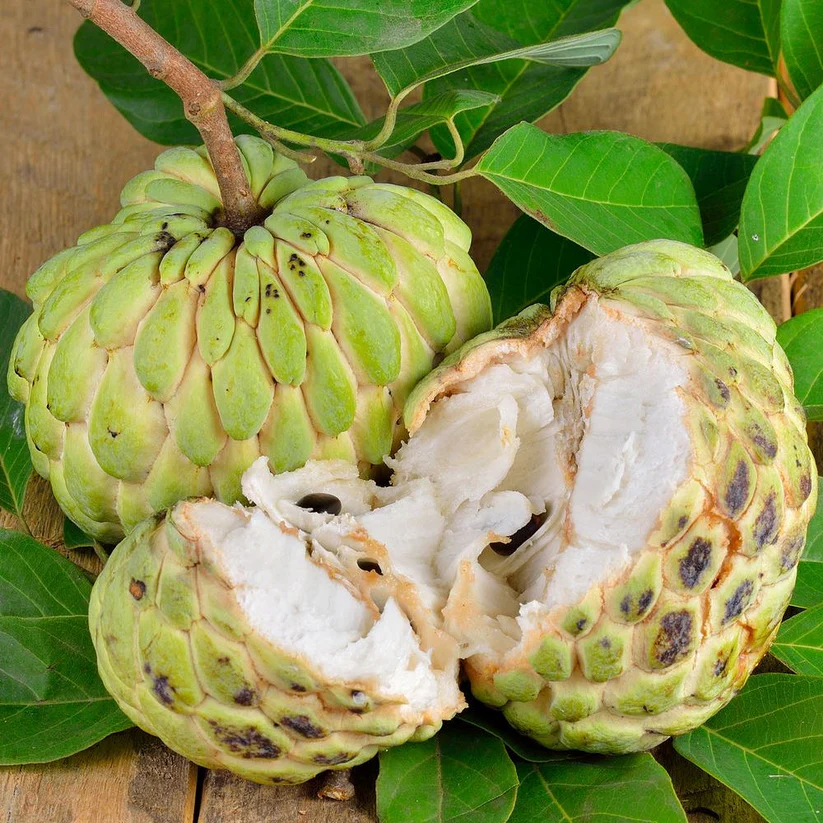

|
Home |
Featured Sites |
Tours Booking Form |
Cuisine |
Contact |
Below are some of the most mouth watering and delicious fruits our island has to offer as well as when they are in season. Be on the look out for your favourites!
Local Name |
Scientific Name |
Season |
Picture |
| Guava | Psidium guajava | July-November |  |
| Pineapple | Ananas comosus | December-July |  |
| Ackee | Melicoccus bijugatus | July-September |  |
| Pomme | Syzygium malaccense | February-July |  |
| Sugar Apple | Annona squamosa | July-December |  |